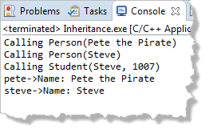

Implementing toString()
The implementation of toString(), in person.cpp does not repeat the keyword virtual. Let's have it display the person's name, like this:
string Person::toString() const
{
return "Name: " + name;
}The Student class inherits Person::toString(). If the Student class does nothing else, then there is no difference between a virtual member function and a regular member function. To see this, modify main() to add the following two lines:
cout << "pete->" << pete.toString() << endl;
cout << "steve->" << steve.toString() << endl;
When you run the sample program it looks like this.
The variable pete prints out the name as you'd expect (since pete is a Person object). The variable steve also uses the new toString() member function defined in Person. To steve, it is just another inherited member.
 This course content is offered under a
CC
Attribution Non-Commercial license. Content in this course
can be considered under this license unless otherwise noted.
This course content is offered under a
CC
Attribution Non-Commercial license. Content in this course
can be considered under this license unless otherwise noted.